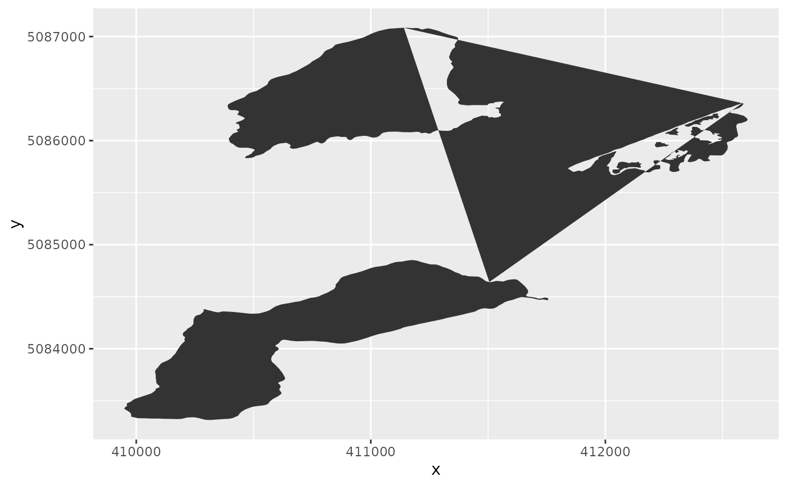

This geometry used to plot polygons with holes in ggplot2 at the more correctly than geom_polygon; however, in recent R and ggplot2 versions this is no longer needed.
geom_polypath(
mapping = NULL,
data = NULL,
stat = "identity",
position = "identity",
na.rm = FALSE,
show.legend = NA,
inherit.aes = TRUE,
rule = "winding",
...
)An aesthetic mapping, created with aes. The aesthetic
will mostly likely need to contain a group mapping.
A data.frame containing the coordinates to plot.
A statistic to apply (most likely "identity")
A position to apply (most likely "identity")
Should missing coordinate be removed?
Should a legend be shown for mapped aesthetics?
Should aesthetics be inherited?
A fill rule to apply. One of "winding" or "evenodd".
Passed to the geom and/or stat.
A ggplot2 layer
# \donttest{
library(ggplot2)
load_longlake_data(which = "longlake_waterdf")
ggplot(df_spatial(longlake_waterdf), aes(x, y, group = piece_id)) +
geom_polypath()
#> `geom_polypath()` is deprecated: use `ggplot2::geom_polygon()` with the `subgroup` aesthetic

# }